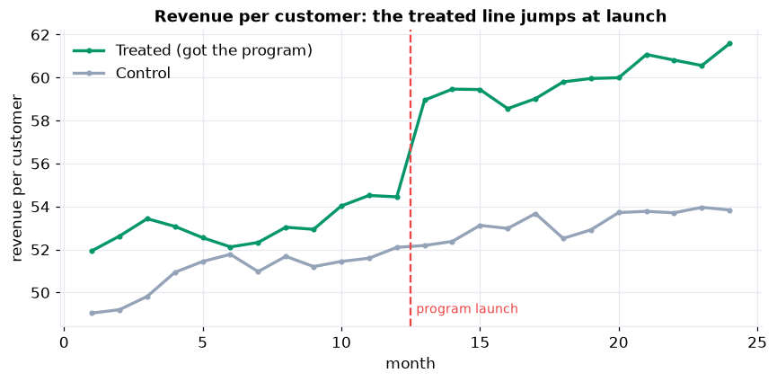
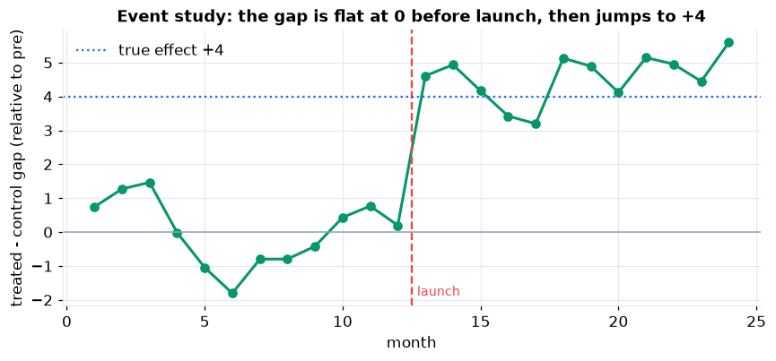

The gold standard for a causal question is a randomized experiment, but you often cannot run one: the program already launched, in specific places, chosen for reasons of their own. Difference-in-differences (DiD) is the workhorse for exactly this situation, and its logic is disarmingly simple: compare the treated group's before-to-after change against the change in a control group that never got the treatment.
It applies the causal-inference ideas of Part XVI to a real evaluation: the difference between correlation and cause, the parallel-trends assumption, and DiD written as a regression interaction with clustered standard errors, all the way to a recommendation.
The Setup, and the Data
A retailer launched a loyalty program in 20 stores at month 13, leaving 20 similar stores as a control group, and recorded monthly revenue per customer for 24 months. Revenue is up in the treated stores afterward, but sales were drifting up everywhere and the treated stores started a little higher. The task is to isolate what the program actually caused.
A store-by-month panel: store, group (Treated / Control),
treated (0/1), month (1–24), post (1 after the month-13 launch), and
revenue_per_customer. The true program effect, known because the data is simulated, is +4.00 dollars.
Two Naive Comparisons, Both Biased
Two obvious ways to measure the effect each hide a different bias. The before/after comparison (treated stores only) says +6.85, but part of that is a market-wide trend every store enjoyed. The treated-versus-control comparison (after only) says +6.70, but treated stores were already about 2 dollars ahead to begin with. Each controls for one bias and ignores the other.
Parallel Trends: the Load-Bearing Assumption
DiD works only if, without the program, the treated stores would have moved in parallel with the control stores. You cannot test that after the launch, but you can test it before: were the groups already drifting apart? A regression of the pre-period gap on time gives a differential trend of just −0.06 per month (p = 0.53), indistinguishable from zero. The picture confirms it: the two lines run parallel until the launch, then the treated line jumps.

Parallel before launch, a clean step up after. The parallel pre-period is what makes the control a credible stand-in for the treated stores' counterfactual.
The DiD Estimate (Steps 6–7)
Difference the differences
The control group's change (+2.30) is what the treated stores would have done without the program, the counterfactual trend. Subtract it from the treated group's change (+6.85) and the program's effect is +4.55 dollars per customer. The picture below is the same idea: the dashed line is the counterfactual (treated stores following the control trend), and the gap between it and the actual treated line is the effect.
The same answer, as a regression
Written as revenue ~ treated + post + treated:post, every part of the story becomes a coefficient: the
intercept is the control baseline, treated is the group gap, post is the market trend, and
the interaction treated:post is the causal effect, exactly the +4.55 from the table.
Writing DiD as a regression is what lets us attach standard errors, add controls, and extend to many periods.
Uncertainty & Robustness (Steps 8–9)
Cluster the standard errors. A store's 24 months are not 24 independent data points, so we cluster by store. That gives a 95% confidence interval of [3.33, 5.77], which contains the true effect of 4.00. Clustering here widens the interval (the classical standard error, 0.49, understates it; the clustered one is 0.62), the usual direction for serially-correlated panel data, and forgetting to cluster is one of the most common ways DiD studies overstate their certainty.
Run a placebo. Pretend the launch happened in the pre-period, when no program existed: an honest method should find nothing, and it does (a near-zero, non-significant estimate). The Take It Further notebook goes further with an event study and a space placebo that reassigns treatment at random, and the real +4.55 sits far outside the null distribution.

The event study is the whole DiD argument in one picture: the gap is flat at zero before launch (parallel trends, visually confirmed), then steps up to about +4.55 and stays there.
Interpret & Communicate (Steps 10–12)
Memo to leadership
The loyalty program raised revenue per customer by an estimated 4.55 dollars, about a 9% lift, in the stores that received it, a statistically strong effect (95% confidence interval 3.33 to 5.77).
Why not the simpler number
A plain before-and-after on the treated stores shows +6.85, roughly 50% larger. That number wrongly credits the program with a market-wide sales trend that lifted every store. Comparing treated to control stores after launch is no better, because the treated stores started higher. Difference-in-differences strips out both biases.
Why we believe it is causal
The two store groups moved in parallel before the launch (a clean pre-trend test and event study), and a placebo analysis found no spurious effect. The load-bearing assumption is that they would have stayed parallel without the program; we cannot prove it, but the evidence for it is strong.
Recommendation
Roll the program out to the remaining stores, and re-estimate the effect as new data arrives to confirm it holds.
Run the whole analysis in Python
The companion notebook is the full 12-step DiD workflow: it plots the two groups over time, exposes the two naive traps, tests parallel pre-trends, computes the 2x2 difference-in-differences and reproduces it as a regression interaction, attaches store-clustered standard errors, passes a placebo test, and writes a leadership memo, all library-first with statsmodels.
View opens the rendered notebook instantly.
Open in Colab runs it live. To run locally, install numpy, pandas,
matplotlib, statsmodels, and openpyxl.
🎓 Key Takeaways
- ✓Difference the differences: subtract the control group's change from the treated group's, and both the baseline gap and the common trend cancel.
- ✓Naive comparisons mislead: before/after (+6.85) mixes in the market trend; treated-vs-control (+6.70) mixes in the baseline gap; DiD (+4.55) removes both.
- ✓Parallel trends is everything: test the pre-trend, plot the event study, and be honest that the post-launch assumption is untestable.
- ✓Cluster the standard errors: repeated observations of a unit are not independent; clustering by store gave the honest interval [3.33, 5.77].
- ✓Stress-test the design: a placebo that finds nothing is what makes the real effect credible.
Take It Further
Five ways to sharpen the causal claim in the companion notebook:
An event study
Estimate the treated-versus-control gap in every month, and watch it sit at zero before launch, then jump.
Two-way fixed effects
Absorb store and month fixed effects; the same estimate, in the framework that scales to many units and periods.
revenue ~ treated:post + C(store) + C(month).A placebo-reassignment test
Randomly relabel stores as fake-treated many times and confirm the real effect is far out in the null.
Which standard error?
Compare classical, robust, and clustered errors, and see why clustering is the honest choice for panels.
cov_type and compare the intervals.When parallel trends breaks
Inject a fake differential trend and watch the DiD estimate balloon, and the pre-trend test catch it.
All five, worked in a companion notebook
A second notebook, Take It Further, rebuilds the Chapter 137 analysis and works every extension with visuals and explanations: an event study, two-way fixed effects, a placebo-reassignment null distribution, a standard-error comparison, and a demonstration of the bias when parallel trends fails.
Quiz: Test Yourself
Eight questions on difference-in-differences, from the naive traps to clustered standard errors. Answer them, hit Check Answers, and keep refining until you score 100%. Your progress is saved.
DiD compared two groups over time. Next we compare the same subjects before and after. Chapter 138 · Case Study: A Paired Pre/Post Study analyzes a within-subject design with the paired t-test and its Wilcoxon signed-rank fallback.